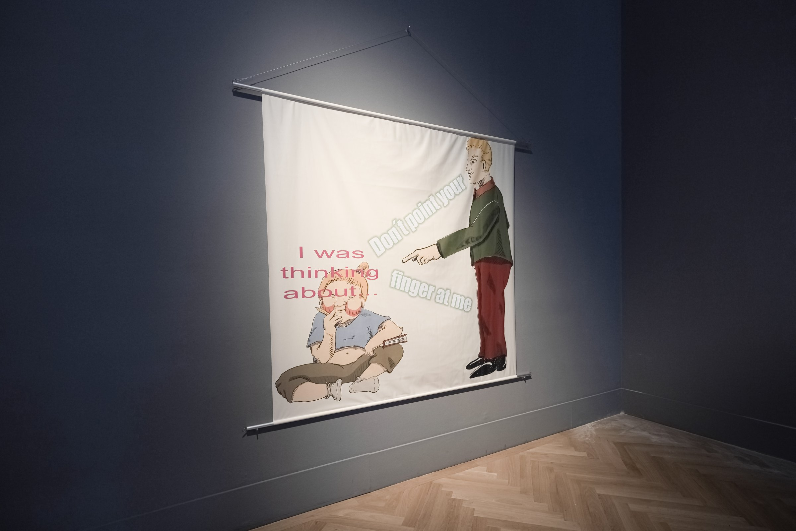
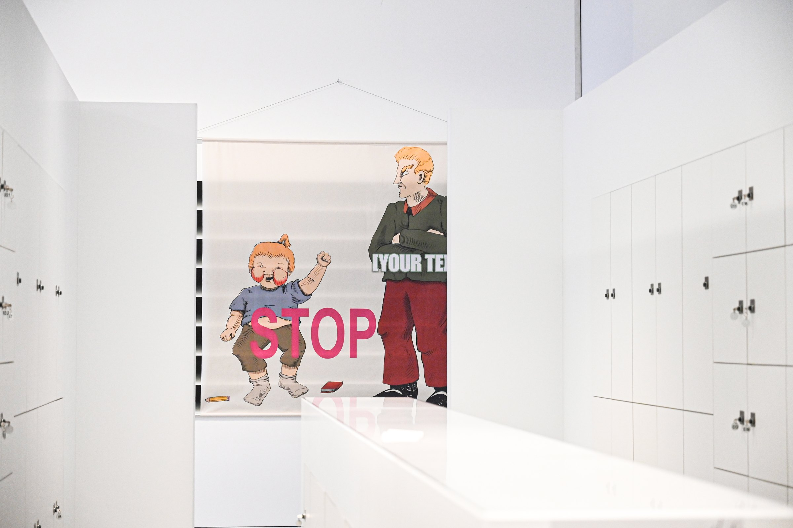
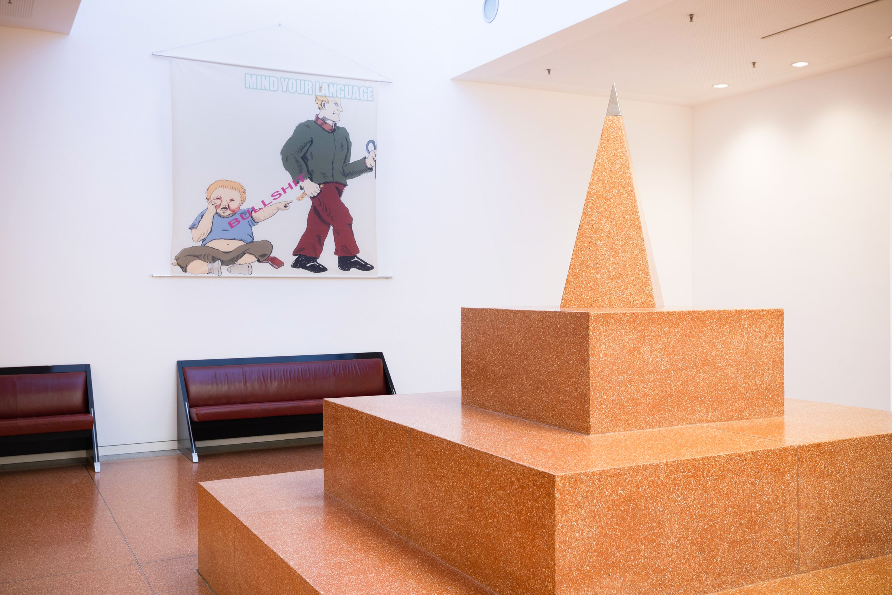
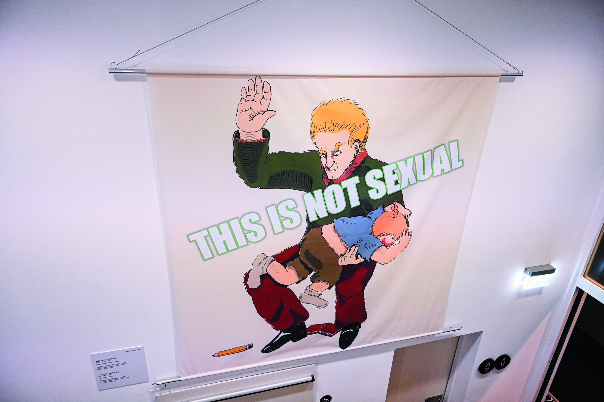
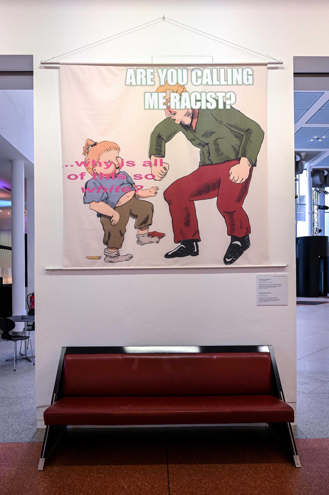

MeMärchen
2021 · Installation
MeMärchen is an installation by Nickii Schamborski, 2021.





About the work
"MeMärchen" questions the construction of morality in fairy tales and on the internet. The title combines "meme" and "Märchen" ["fairy tale"], exploring who propagates hegemonic narratives and who is accused of moralism. Created as graphic memes, printed on fabric, the series of images highlight the intersection of moralism, power, and social discourse.
Zur Arbeit
MeMärchen untersucht die Konstruktion von Moral in Märchen und im Internet. Der Titel verbindet Meme und Märchen und hinterfragt, wer hegemoniale Narrative verbreitet und wem Moralismus vorgeworfen wird. Die Serie beleuchtet die Verflechtung von Moralismus, Macht und sozialen Debatten.
Details
- Year
- 2021
- Type
- Installation
- Specs
- In collaboration with Paulina Estrada. Series of 5 digital prints on fabric (2 x 2 m), hanging on aluminium tubes